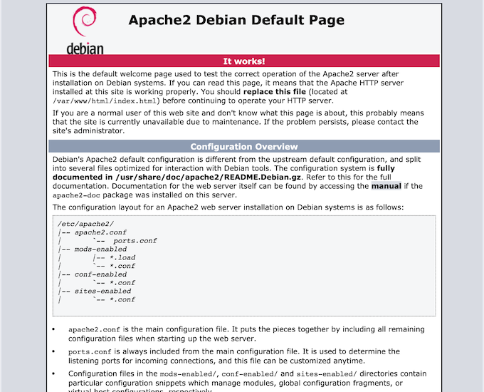

Virtuellen Server einrichten¶
Wir wollen erläutern, wie Sie sich einen Virtuellen Server einrichten können. Einen solchen Server erhalten Sie auf Antrag bei den Laboringenieuren in der 6. Etage des C-Gebäudes. Wir beschreiben hier die Einrichtung eines solchen Servers, der hier die IP 141.45.146.202 und den Namen htwfb5.f4.htw-berlin.de hat. Nach Einrichtung durch die Laboringenieure hat ein solcher Server zwei User: local und root. Sie können sich baer weder per ssh noch per sftp als root auf dem Server einloggen.
Einloggen per ssh¶
Sie können sich nur als local einloggen. Geben Sie dazu im Terminal
% ssh local@141.45.146.202
The authenticity of host '141.45.146.202 (141.45.146.202)' can't be established.
ECDSA key fingerprint is SHA256:Kh3JNWKv1J29LDdFn12p2p+cKzP8zzQHpwuhVoQqOio.
Are you sure you want to continue connecting (yes/no/[fingerprint])? yes
Warning: Permanently added '141.45.146.202' (ECDSA) to the list of known hosts.
local@141.45.146.202's password:
Linux htwfb5 4.19.0-5-amd64 #1 SMP Debian 4.19.37-5 (2019-06-19) x86_64
The programs included with the Debian GNU/Linux system are free software;
the exact distribution terms for each program are described in the
individual files in /usr/share/doc/*/copyright.
Debian GNU/Linux comes with ABSOLUTELY NO WARRANTY, to the extent
permitted by applicable law.
Last login: Mon Oct 19 10:19:16 2020 from 141.45.154.161
local@htwfb5:~$
und auf Nachfrage das Passwort des Users local ein. Anstelle von ssh local@141.45.146.202 hätten Sie auch ssh local@htwfb5.f4.htw-berlin.de verwenden können. Um nun root-Rechte zu erlangen, geben Sie su - (super user - Minus nicht vergessen!) und das Passwort für root ein.
local@htwfb5:~$ su -
Password:
root@htwfb5:/home/local#
Sie sind nun als root auf dem Server eingeloggt.
Systeminformationen¶
Probieren Sie ein paar Befehle aus, um Informationen über das Sytem zu ermitteln. Zunächst Details über das Betriebssystem:
root@htwfb5:~# hostnamectl
Static hostname: htwfb5
Icon name: computer-vm
Chassis: vm
Machine ID: 8074a4fe7a1e4160882b8739fc91ff6b
Boot ID: 1289d3137b284315b3e780bae4672d53
Virtualization: xen
Operating System: Debian GNU/Linux 10 (buster)
Kernel: Linux 4.19.0-5-amd64
Architecture: x86-64
root@htwfb5:~#
Und so fragen Sie laufende Prozesse ab:
ps aux
Liste aller Nutzer (less mit qbeenden):
less /etc/passwd
Liste aller Gruppen:
less /etc/group q
Die Firewall anpassen¶
Als erstes passen wir die firewall an, da es standardmäßig nicht erlaubt ist, sich von außerhalb des HTW-Netzes auf einen solchen Server einzuloggen (Sie müssten dann immer erst einen VPN-Tunnel aufmachen).
root@htwfb5:/home/local# cd /root
root@htwfb5:~# ls -la
total 36
drwx------ 2 root root 4096 Oct 19 13:40 .
drwxr-xr-x 22 root root 4096 Oct 19 09:20 ..
-rw------- 1 root root 417 Oct 19 10:19 .bash_history
-rw-r--r-- 1 root root 570 Jan 31 2010 .bashrc
-rw-r--r-- 1 root root 148 Aug 17 2015 .profile
-rw------- 1 root root 1587 Oct 19 13:40 .viminfo
-rwxr-xr-x 1 root root 90 Jul 8 2019 firewall-disable.sh
-rwxr-xr-x 1 root root 4112 Jul 8 2019 firewall.sh
root@htwfb5:~#
Öffnen Sie die firewall.sh mit vim (ist bereits installiert), also vim firewall.sh und entfernen Sie dann in folgenden Zeilen das # (den Kommentar):
iptables -A INPUT -p tcp --dport 22 -j ACCEPT
iptables -A OUTPUT -p tcp --dport 22 -j ACCEPT
iptables -A INPUT -p tcp --dport 443 -j ACCEPT
iptables -A OUTPUT -p tcp --dport 443 -j ACCEPT
iptables -A INPUT -p tcp --dport 8080 -j ACCEPT
iptables -A OUTPUT -p tcp --dport 8080 -j ACCEPT
jeweils 2 Mal (für außerhalb und innerhalb). Alles andere sollte zunächst so bleiben. Lesen Sie die aktualisierte firewall.sh ein (als root):
./firewall.sh
Jetzt können Sie sich auch von außen als local einloggen und können auch von außen sftp verwenden.
Installationen¶
Wir wollen im folgenden ein System aus
- Apache Webserver
- MySQL (und phpMyAdmin)
erstellen und installieren dafür nun die entsprechenden Komponenten. Vor jeder Neuinstallation geben wir zunächst (als root)
apt update
apt full-upgrade
Apche Webserver¶
Um den Apache Webserver zu installieren, geben wir
apt install apache2
ein und drücken bei Nachfragen einfach Enter. Nach der Installation können Sie den Status des Webservers abfragen:
root@htwfb5:~# systemctl status apache2
* apache2.service - The Apache HTTP Server
Loaded: loaded (/lib/systemd/system/apache2.service; enabled; vendor preset: enabled)
Active: active (running) since Mon 2020-10-19 14:51:24 UTC; 26min ago
Docs: https://httpd.apache.org/docs/2.4/
Main PID: 24209 (apache2)
Tasks: 55 (limit: 1074)
Memory: 4.6M
CGroup: /system.slice/apache2.service
|-24209 /usr/sbin/apache2 -k start
|-24211 /usr/sbin/apache2 -k start
`-24212 /usr/sbin/apache2 -k start
Oct 19 14:51:23 htwfb5 systemd[1]: Starting The Apache HTTP Server...
Oct 19 14:51:24 htwfb5 systemd[1]: Started The Apache HTTP Server.
root@htwfb5:~#
und auch die URL http://htwfb5.f4.htw-berlin.de/ in den Browser eingeben. Es erscheint:

Falls Sie den Webserver neu starten wollen/müssen, geben Sie einfach
systemctl restart apache2
ein. Sollte es Probleme mit dem Webserver geben, schauen Sie sich die *.log-Dateien unter /var/log/apache2 an:
root@htwfb5:/var/log/apache2# ls -la
total 16
drwxr-x--- 2 root adm 4096 Oct 19 14:51 .
drwxr-xr-x 6 root root 4096 Oct 19 14:51 ..
-rw-r----- 1 root adm 1024 Oct 19 15:22 access.log
-rw-r----- 1 root adm 281 Oct 19 14:51 error.log
-rw-r----- 1 root adm 0 Oct 19 14:51 other_vhosts_access.log
root@htwfb5:/var/log/apache2#
PHP installieren¶
Um zum Beispiel phpMyAdmin für unsere MySQL-Datenbank nutzen zu können, benötigen wir PHP. Dazu installieren wir
apt install php php-cgi php-mysqli php-pear php-mbstring php-gettext libapache2-mod-php php-common php-phpseclib php-mysql
und drücken bei Nachfragen einfach Enter. Die erfolgreiche Installation können Sie überprüfen, indem Sie
root@htwfb5:~# php --version
PHP 7.3.19-1~deb10u1 (cli) (built: Jul 5 2020 06:46:45) ( NTS )
Copyright (c) 1997-2018 The PHP Group
Zend Engine v3.3.19, Copyright (c) 1998-2018 Zend Technologies
with Zend OPcache v7.3.19-1~deb10u1, Copyright (c) 1999-2018, by Zend Technologies
root@htwfb5:~#
eingeben.
MySQL installieren¶
Es spricht gar nichts dagegen, anstelle von MySQL MariaDB zu installieren. In der Verwendung sind beide Datenbankmanagementsysteme kompatibel. Wir zeigen hier die Installation von MySQL.
Zunächst benötigen wir das GnuPG Package, eine Open-Source-Implementierung des OpenPGP-Standards. Geben Sie
apt install gnupg
ein und drücken bei Nachfragen einfach Enter.
Öffnen Sie im Browser nun die Seite https://dev.mysql.com/downloads/repo/apt/ und klicken dort den "Download"-Button. Auf der folgenden Seite klicken Sie weder auf den "Login"- noch auf den "Sign Up"-Button, sondern rechts-klicken(!) auf den Link No thanks, just start my download. Kopieren Sie diesen Link in Ihre Zwischenablage. Geben Sie nun im Terminal ein:
wget https://dev.mysql.com/get/mysql-apt-config_0.8.15-1_all.deb
Die https://...-Adresse ist der kopierte Link! Ihr Ordner enthält dann die mysql-...deb-Datei. Geben Sie nun
dpkg -i mysql-apt-config*
in Ihr Terminal ein. Es erscheint ein blaues Fenster. Durch die Menüpunkte können Sie mit den Pfeiltasten navigieren. Sie können aber alles so lassen (den oberen Menüpunkt) und mit der Tab-Taste zu <Ok> wechseln. Drücken Sie Enter. Auch auf der nächsten Seite. Geben Sie nun
root@htwfb5:~# apt-get update
Get:1 http://repo.mysql.com/apt/debian buster InRelease [21.5 kB]
Hit:2 http://security.debian.org buster/updates InRelease
Hit:3 http://httpredir.debian.org/debian buster InRelease
Get:4 http://repo.mysql.com/apt/debian buster/mysql-8.0 Sources [951 B]
Get:5 http://repo.mysql.com/apt/debian buster/mysql-apt-config amd64 Packages [563 B]
Get:6 http://repo.mysql.com/apt/debian buster/mysql-8.0 amd64 Packages [7542 B]
Get:7 http://repo.mysql.com/apt/debian buster/mysql-tools amd64 Packages [5210 B]
Fetched 35.8 kB in 1s (69.7 kB/s)
Reading package lists... Done
root@htwfb5:~#
apt install mysql-server
Während der Installation werden Sie nach dem root-Passwort für MySQL gefragt, d.h. Sie sollen sich eins überlegen. Notieren Sie sich dieses Passwort! Sie können auch das Passwort des local-Users des Virtuellen Servers verwenden (um sich nicht so viele Passwörter merken zu müssen). Wählen Sie danach "Strong password encryption" aus und drücken <Ok>.
Prüfen, ob MySQL korrekt installiert ist und läuft:
root@htwfb5:~# systemctl status mysql
* mysql.service - MySQL Community Server
Loaded: loaded (/lib/systemd/system/mysql.service; enabled; vendor preset: enabled)
Active: active (running) since Mon 2020-10-19 15:55:55 UTC; 17h ago
Docs: man:mysqld(8)
http://dev.mysql.com/doc/refman/en/using-systemd.html
Process: 6290 ExecStartPre=/usr/share/mysql-8.0/mysql-systemd-start pre (code=exited, status=0/S
Main PID: 6325 (mysqld)
Status: "Server is operational"
Tasks: 37 (limit: 1074)
Memory: 331.3M
CGroup: /system.slice/mysql.service
`-6325 /usr/sbin/mysqld
Oct 19 15:55:54 htwfb5 systemd[1]: Starting MySQL Community Server...
Oct 19 15:55:55 htwfb5 systemd[1]: Started MySQL Community Server.
Sie können die MySQL-Konfiguration noch absichern, um die Nutzerinnen zu zwingen, relativ starke Passwörter zu verwenden. Dazu gibt es das Tool mysql_secure_installation, welches mit dem MySQL-Server geliefert wird. Sie können darin entscheiden, ob Sie eine Passwortvalidierung verwenden wollen und welche Stärke das Passwort haben soll. ob Sie anonyme User und das root-Login von außen verbieten wollen und ob die test-Datenbank, auf die jeder Zugriff hat, gelöscht werden soll. Wir werden dieses Werkzeug jetzt (noch) nicht ausführen, spätestens aber, wenn wir mit einer Webanwendung auf dem Server in Produktion gehen.
Sie können nun aber das MySQL-Administrationstool mysqladmin verwenden:
mysqladmin -u root -p version
-u root gibt an, dass Sie sich als root (MySQL-root) anmelden und -p gibt an, dass das (MySQL-)root-Passwort eingegeben werden muss.
Für mysqladmin -u root -p version erhalten Sie ungefähr folgende Ausgabe:
root@htwfb5:~# mysqladmin -u root -p version
Enter password:
mysqladmin Ver 8.0.22 for Linux on x86_64 (MySQL Community Server - GPL)
Copyright (c) 2000, 2020, Oracle and/or its affiliates. All rights reserved.
Oracle is a registered trademark of Oracle Corporation and/or its
affiliates. Other names may be trademarks of their respective
owners.
Server version 8.0.22
Protocol version 10
Connection Localhost via UNIX socket
UNIX socket /var/run/mysqld/mysqld.sock
Uptime: 18 hours 7 min 43 sec
Threads: 2 Questions: 8 Slow queries: 0 Opens: 127 Flush tables: 3 Open tables: 48 Queries per second avg: 0.000
root@htwfb5:~#
mysqladmin ist ein recht mächtiges Tool. Insbesondere können Sie damit auch alle Nutzerinnen-Passwörter ändern (auch das von root). Weitere Informationen zu mysqladmin finden Sie hier
phpMyAdmin¶
Wir könnten nun Datenbanken, Tabellen usw. über die Kommandozeile des MySQl-Servers anlegen, ändern und löschen, aber wir verwenden dafür lieber die grafische Weboberfläche phpMyAdmin. Wir laden die aktuelle Version von phpMyAdmin zunächst herunter:
wget -P Downloads https://www.phpmyadmin.net/downloads/phpMyAdmin-latest-all-languages.tar.gz
Mit der Option Downloads geben wir an, dass der Download in einen Download-Ordner in dem aufrufenden Ordner erfolgt, d.h. in dem aufrufenden Ordner wird ein Ordner Downloads angelegt, falls er noch nicht existiert. Um die Signatur der heruntergeladenen Datei zu überprüfen, laden wir uns noch den GPG key für phpMyAdmin herunter (ebenfalls in das Downloads- Verzeichnis:
wget -P Downloads https://files.phpmyadmin.net/phpmyadmin.keyring
Wir wechseln in den Downloads- Ordner und importieren den keyring:
root@htwfb5:~# cd Downloads/
root@htwfb5:~/Downloads# gpg --import phpmyadmin.keyring
gpg: directory '/root/.gnupg' created
gpg: keybox '/root/.gnupg/pubring.kbx' created
gpg: /root/.gnupg/trustdb.gpg: trustdb created
gpg: key 9C27B31342B7511D: public key "Michal \xc4\x8ciha\xc5\x99 <michal@cihar.com>" imported
gpg: key FEFC65D181AF644A: public key "Marc Delisle <marc@infomarc.info>" imported
gpg: key CE752F178259BD92: public key "Isaac Bennetch <bennetch@gmail.com>" imported
gpg: key DA68AB39218AB947: public key "phpMyAdmin Security Team <security@phpmyadmin.net>" imported
gpg: Total number processed: 4
gpg: imported: 4
Wir verlassen den Downloads-Ordner wieder und laden uns das .asc- File von phpmyadminherunter. asc-Dateien sind ASCII-Skript-Dateien. Hier enthält es eine digitale Signatur als Text und kann von Ver- und Entschlüsselungsprogrammen, wie z.B. * Pretty Good Privacy (PGP)* geprüft werden.
root@htwfb5:~/Downloads# cd ..
root@htwfb5:~# wget -P Downloads https://www.phpmyadmin.net/downloads/phpMyAdmin-latest-all-languages.tar.gz.asc
--2020-10-20 10:41:33-- https://www.phpmyadmin.net/downloads/phpMyAdmin-latest-all-languages.tar.gz.asc
Resolving www.phpmyadmin.net (www.phpmyadmin.net)... 195.181.175.48
Connecting to www.phpmyadmin.net (www.phpmyadmin.net)|195.181.175.48|:443... connected.
HTTP request sent, awaiting response... 302 Found
Location: https://files.phpmyadmin.net/phpMyAdmin/5.0.4/phpMyAdmin-5.0.4-all-languages.tar.gz.asc [following]
--2020-10-20 10:41:33-- https://files.phpmyadmin.net/phpMyAdmin/5.0.4/phpMyAdmin-5.0.4-all-languages.tar.gz.asc
Resolving files.phpmyadmin.net (files.phpmyadmin.net)... 195.181.175.55
Connecting to files.phpmyadmin.net (files.phpmyadmin.net)|195.181.175.55|:443... connected.
HTTP request sent, awaiting response... 200 OK
Length: 833 [application/octet-stream]
Saving to: 'Downloads/phpMyAdmin-latest-all-languages.tar.gz.asc'
phpMyAdmin-latest-all-languages 100%[=====================================================>] 833 --.-KB/s in 0s
2020-10-20 10:41:33 (12.5 MB/s) - 'Downloads/phpMyAdmin-latest-all-languages.tar.gz.asc' saved [833/833]
Nun können wir die phpmyadmin- Signatur überprüfen:
root@htwfb5:~# cd Downloads
root@htwfb5:~/Downloads# gpg --verify phpMyAdmin-latest-all-languages.tar.gz.asc
gpg: assuming signed data in 'phpMyAdmin-latest-all-languages.tar.gz'
gpg: Signature made Thu Oct 15 18:10:40 2020 UTC
gpg: using RSA key 3D06A59ECE730EB71B511C17CE752F178259BD92
gpg: Good signature from "Isaac Bennetch <bennetch@gmail.com>" [unknown]
gpg: aka "Isaac Bennetch <isaac@bennetch.org>" [unknown]
gpg: WARNING: This key is not certified with a trusted signature!
gpg: There is no indication that the signature belongs to the owner.
Primary key fingerprint: 3D06 A59E CE73 0EB7 1B51 1C17 CE75 2F17 8259 BD92
Zugriff auf phpMyAdmin über den Webserver¶
Wir haben phpMyAdmin nun heruntergeladen und den Download verifiziert. Jetzt wollen wir es für die Nutzung zur Verfügung stellen. Damit es über eine URL, wie z.B. http://htwfb5.f4.htw-berlin.de/phpmyadmin erreichbar ist, kopieren wir phpmyadmin in unser * DocumentRoot* . Das ist in Linux-Systemen typischerweise var/www/html. Wir wechesln in dieses Verzeichnis und erstellen dort den Ordner phpmyadmin:
root@htwfb5:~/Downloads# cd /var/www/html
root@htwfb5:/var/www/html# ls -la
total 20
drwxr-xr-x 2 root root 4096 Oct 19 14:51 .
drwxr-xr-x 3 root root 4096 Oct 19 14:51 ..
-rw-r--r-- 1 root root 10701 Oct 19 14:51 index.html
root@htwfb5:/var/www/html# mkdir phpmyadmin
root@htwfb5:/var/www/html# ls -la
total 24
drwxr-xr-x 3 root root 4096 Oct 20 10:53 .
drwxr-xr-x 3 root root 4096 Oct 19 14:51 ..
-rw-r--r-- 1 root root 10701 Oct 19 14:51 index.html
drwxr-xr-x 2 root root 4096 Oct 20 10:53 phpmyadmin
Danach wechseln wir wieder in unseren Downloads-Ordner zurück und entpacken dort unsere gezippte phpmyadmin-Datei direkt in den /var/www/html/phpmyadmin-Ordner:
root@htwfb5:/var/www/html# cd /root/Downloads/
root@htwfb5:~/Downloads# tar xvf phpMyAdmin-latest-all-languages.tar.gz --strip-components=1 -C /var/www/html/phpmyadmin
Es erscheint eine sehr lange Liste von Dateien, die alle in den /var/www/html/phpmyadmin-Ordner entpackt werden. Jetzt könnte man die URL http://htwfb5.f4.htw-berlin.de/phpmyadmin/ bereits in den Browser eingeben und es käme bereits das Anmeldeformular für phpmyadmin:
Wir wollen uns aber zunächst noch um eine sichere Anmeldung kümmern. Dazu wechseln wir in das /var/www/html/phpmyadmin-Verzeichnis. Darin gibt es eine Datei config.sample.inc.php, welche eine Beispiel-Konfiguration für phpmyadmin enthält. Diese Datei kopieren wir in eine config.inc.php-Datei (diese wird erstellt):
cd /var/www/html/phpmyadmin
cp config.sample.inc.php config.inc.php
Wir öffnen diese config.inc.phpmit einem Terminaleditor (z.B. nano oder vim). IN Zeile 18in dieser Datei gibt es folgenden Eintrag:
$cfg['blowfish_secret'] = ''; /* YOU MUST FILL IN THIS FOR COOKIE AUTH! */
Wir benötigen eine Passphrase für den Blowfish-Verschlüsselungsalgorithmus, der für die Authentifikation mithilfe von Cookies verwendet wird. Diese Passphrase soll mindestens 32 Zeichen lang sein. Sie tragen diese Passphrase direkt in die Datei config.inc.php ein, deshalb müssen Sie sich diese auch gar nicht merken, da sie dort ja jederzeit für Sie lesbar ist. Geben Sie also ein Satz dort ein, der aus mindestens 32 Zeichen besteht (kann Sonderzeichen, Leerzeichen usw. enthalten). Speichern Sie dann die Datei config.inc.php. Wir wechseln die Zugriffsrechte der Datei config.inc.php von 644 auf 660 (schreib- und lesbar durch User und Group, aber weder noch für die Welt):
root@htwfb5:/var/www/html/phpmyadmin# chmod 660 config.inc.php
root@htwfb5:/var/www/html/phpmyadmin# ls -la config.inc.php
-rw-rw---- 1 root root 4590 Oct 20 11:18 config.inc.php
Wir haben das gesamte Verzeichnis phpmyadmin in /var/www/html als rootangelegt. Dadurch ist root dort auch Owner. Das wollen wir ändern. Rekursiv wird das gesamte Verzeichnis dem User (und der Group) www-data zugeordnet.
chown -R www-data:www-data phpmyadmin
Jetzt starten wir noch unseren Webserver neu und dann können wir phpmyadmin im Browser aufrufen:
systemctl restart apache2
Mögliche Login-Probleme phpmyadmin
- eventuelle Fehlerausschrift:
mysqli::real_connect(): The server requested authentication method unknown to the client [caching_sha2_password] - und/oder
mysqli::real_connect(): (HY000/2054): The server requested authentication method unknown to the client - mögliche Lösungen: PHP-Update auf 7.4 (davor hat
mysqlicaching_sha2nicht unterstützt) - wenn das auch nicht hilft:
- per
mysql -u root -palsrootauf den MySQl-Server anmelden - ALTER USER 'root'@'localhost' IDENTIFIED WITH mysql_native_password BY 'hierDasRootPasswort';
- dann wird wieder native Passwort geprüft
- per
Eine Testdatenbank¶
Rufen Sie phpmyadmin im Browser auf und loggen sich als root ein. In der linken Spalte sind alle bisherigen Datenbanken aufgelistet. Klicken Sie dort auf Neu und erstellen Sie eine neue Datenbank Test20. Wählen Sie diese Datenbank links aus, indem Sie sie anklicken. Gehen Sie auf den Reiter SQL und kopieren Sie folgenden Inhalt in das SQL-Terminal:
Test20.sql
-- phpMyAdmin SQL Dump
-- version 5.0.4
-- https://www.phpmyadmin.net/
--
-- Host: localhost
-- Erstellungszeit: 20. Okt 2020 um 15:44
-- Server-Version: 8.0.22
-- PHP-Version: 7.3.19-1~deb10u1
SET SQL_MODE = "NO_AUTO_VALUE_ON_ZERO";
START TRANSACTION;
SET time_zone = "+00:00";
/*!40101 SET @OLD_CHARACTER_SET_CLIENT=@@CHARACTER_SET_CLIENT */;
/*!40101 SET @OLD_CHARACTER_SET_RESULTS=@@CHARACTER_SET_RESULTS */;
/*!40101 SET @OLD_COLLATION_CONNECTION=@@COLLATION_CONNECTION */;
/*!40101 SET NAMES utf8mb4 */;
--
-- Datenbank: `Test20`
--
-- --------------------------------------------------------
--
-- Tabellenstruktur für Tabelle `assistenten`
--
CREATE TABLE `assistenten` (
`pers_nr` int NOT NULL,
`name` varchar(30) NOT NULL,
`fachgebiet` varchar(30) DEFAULT NULL,
`von` int DEFAULT NULL
) ENGINE=InnoDB DEFAULT CHARSET=utf8mb4 COLLATE=utf8mb4_0900_ai_ci;
--
-- Daten für Tabelle `assistenten`
--
INSERT INTO `assistenten` (`pers_nr`, `name`, `fachgebiet`, `von`) VALUES
(3002, 'Sokrates', 'Ideenlehre', 2125),
(3003, 'Aristoteles', 'Syllogistik', 2125),
(3004, 'Wittgenstein', 'Sprachtheorie', 2126),
(3005, 'Mitchell', 'Planetenbewegung', 2127),
(3006, 'Newton', 'Keplersche Gesetze', 2134),
(3007, 'Whitehead', 'analytische Philosophie', 2134);
-- --------------------------------------------------------
--
-- Tabellenstruktur für Tabelle `hoeren`
--
CREATE TABLE `hoeren` (
`matr_nr` int NOT NULL,
`vorl_nr` int NOT NULL
) ENGINE=InnoDB DEFAULT CHARSET=utf8mb4 COLLATE=utf8mb4_0900_ai_ci;
--
-- Daten für Tabelle `hoeren`
--
INSERT INTO `hoeren` (`matr_nr`, `vorl_nr`) VALUES
(25403, 5022),
(26120, 5001),
(27550, 4052),
(27550, 5001),
(28106, 5041),
(28106, 5052),
(28106, 5216),
(28106, 5259),
(29120, 5001),
(29120, 5041),
(29120, 5049),
(29555, 5001),
(29555, 5022);
-- --------------------------------------------------------
--
-- Tabellenstruktur für Tabelle `professoren`
--
CREATE TABLE `professoren` (
`pers_nr` int NOT NULL,
`name` varchar(30) NOT NULL,
`rang` char(2) DEFAULT NULL,
`raum` int DEFAULT NULL
) ;
--
-- Daten für Tabelle `professoren`
--
INSERT INTO `professoren` (`pers_nr`, `name`, `rang`, `raum`) VALUES
(2125, 'Hypathia', 'C4', 226),
(2126, 'Russel', 'C4', 232),
(2127, 'Meitner', 'C3', 310),
(2133, 'Gauss', 'C3', 52),
(2134, 'Kepler', 'C3', 309),
(2136, 'Curie', 'C4', 36),
(2137, 'Galileo', 'C4', 7);
-- --------------------------------------------------------
--
-- Tabellenstruktur für Tabelle `pruefen`
--
CREATE TABLE `pruefen` (
`matr_nr` int NOT NULL,
`vorl_nr` int NOT NULL,
`pers_nr` int DEFAULT NULL,
`note` decimal(2,1) DEFAULT NULL
) ;
--
-- Daten für Tabelle `pruefen`
--
INSERT INTO `pruefen` (`matr_nr`, `vorl_nr`, `pers_nr`, `note`) VALUES
(25403, 5041, 2125, '2.0'),
(27550, 4630, 2137, '2.0'),
(28106, 5001, 2126, '1.0');
-- --------------------------------------------------------
--
-- Tabellenstruktur für Tabelle `studenten`
--
CREATE TABLE `studenten` (
`matr_nr` int NOT NULL,
`name` varchar(30) NOT NULL,
`semester` int DEFAULT NULL
) ENGINE=InnoDB DEFAULT CHARSET=utf8mb4 COLLATE=utf8mb4_0900_ai_ci;
--
-- Daten für Tabelle `studenten`
--
INSERT INTO `studenten` (`matr_nr`, `name`, `semester`) VALUES
(24002, 'Dijkstra', 18),
(25403, 'Einstein', 12),
(26120, 'Goeppert-Mayer', 10),
(26830, 'Noether', 8),
(27550, 'Goedel', 6),
(28106, 'Lovelace', 3),
(29120, 'Bartik', 2),
(29555, 'Pasteur', 2);
-- --------------------------------------------------------
--
-- Tabellenstruktur für Tabelle `voraussetzen`
--
CREATE TABLE `voraussetzen` (
`vorgaenger` int NOT NULL,
`nachfolger` int NOT NULL
) ENGINE=InnoDB DEFAULT CHARSET=utf8mb4 COLLATE=utf8mb4_0900_ai_ci;
--
-- Daten für Tabelle `voraussetzen`
--
INSERT INTO `voraussetzen` (`vorgaenger`, `nachfolger`) VALUES
(5041, 5052),
(5041, 5216),
(5043, 5052),
(5052, 5022),
(5259, 5041),
(5259, 5043),
(5259, 5049);
-- --------------------------------------------------------
--
-- Tabellenstruktur für Tabelle `vorlesungen`
--
CREATE TABLE `vorlesungen` (
`vorl_nr` int NOT NULL,
`titel` varchar(30) DEFAULT NULL,
`sws` int DEFAULT NULL,
`gelesen_von` int DEFAULT NULL
) ENGINE=InnoDB DEFAULT CHARSET=utf8mb4 COLLATE=utf8mb4_0900_ai_ci;
--
-- Daten für Tabelle `vorlesungen`
--
INSERT INTO `vorlesungen` (`vorl_nr`, `titel`, `sws`, `gelesen_von`) VALUES
(4052, 'Medizin', 4, 2125),
(4630, 'Mechanik', 4, 2137),
(5001, 'Physik', 4, 2137),
(5022, 'Astronomie', 2, 2134),
(5041, 'Ethik', 4, 2125),
(5043, 'Erkenntnistheorie', 3, 2126),
(5049, 'Philosophie', 2, 2125),
(5052, 'Wissenschaftstheorie', 3, 2126),
(5216, 'Logik', 2, 2126),
(5259, 'Mathematik', 2, 2133);
--
-- Indizes der exportierten Tabellen
--
--
-- Indizes für die Tabelle `assistenten`
--
ALTER TABLE `assistenten`
ADD PRIMARY KEY (`pers_nr`),
ADD KEY `von` (`von`);
--
-- Indizes für die Tabelle `hoeren`
--
ALTER TABLE `hoeren`
ADD PRIMARY KEY (`matr_nr`,`vorl_nr`);
--
-- Indizes für die Tabelle `professoren`
--
ALTER TABLE `professoren`
ADD PRIMARY KEY (`pers_nr`),
ADD UNIQUE KEY `raum` (`raum`);
--
-- Indizes für die Tabelle `pruefen`
--
ALTER TABLE `pruefen`
ADD PRIMARY KEY (`matr_nr`,`vorl_nr`);
--
-- Indizes für die Tabelle `studenten`
--
ALTER TABLE `studenten`
ADD PRIMARY KEY (`matr_nr`);
--
-- Indizes für die Tabelle `voraussetzen`
--
ALTER TABLE `voraussetzen`
ADD PRIMARY KEY (`vorgaenger`,`nachfolger`);
--
-- Indizes für die Tabelle `vorlesungen`
--
ALTER TABLE `vorlesungen`
ADD PRIMARY KEY (`vorl_nr`);
--
-- Constraints der exportierten Tabellen
--
--
-- Constraints der Tabelle `assistenten`
--
ALTER TABLE `assistenten`
ADD CONSTRAINT `assistenten_ibfk_1` FOREIGN KEY (`von`) REFERENCES `professoren` (`pers_nr`);
COMMIT;
/*!40101 SET CHARACTER_SET_CLIENT=@OLD_CHARACTER_SET_CLIENT */;
/*!40101 SET CHARACTER_SET_RESULTS=@OLD_CHARACTER_SET_RESULTS */;
/*!40101 SET COLLATION_CONNECTION=@OLD_COLLATION_CONNECTION */;
Klicken Sie dann auf OK. Es werden mehrere Tabellen erstellt und diese befüllt. Prüfen Sie das Ergebnis. Anstelle des Hineinkopierens des SQL-Codes können Sie auch unter dem Reiter Importieren die Datei Test20.sql hochladen und ausführen lassen. Laden Sie sich dazu die Datei Test20.sql herunter, speichern Sie ab und laden Sie dann unter dem Reiter Importieren hoch.
git¶
Damit Sie Ihr Repository / Ihre Repositories auch auf den virtuellen Server "pullen" können, benötigen Sie noch git. Die Installation ist einfach:
apt install git
Beantworten Sie eventuelle Fragen einfach mit Enter. Testen Sie, ob die Installation erfolgreich war:
git --version
Es sollte etwas wie git version 2.20.1 ausgegeben werden.
Verwendung von git¶
Sie müssen nun Ihr Remote Rpository (die entsprechende URL erhalten Sie bei GitHub oder GitLab oder welchen git-Host Sie auch verwenden) genau ein Mal clonen (git clone RemoteRepositoryCloneURL). Meistens wollen Sie genau in den Ordner /var/www/html clonen, da dort dann Ihr lokales Repository angelegt wird und Sie gleichzeitig im DocumentRoot sind.
Wir zeigen hier einmal exemplarisch das Clonen des GitHub-Repositories mit der Clone_URL https://github.com/jfreiheit/projekte.git. Wir wechseln zunächst in das Verzeichnis /var/www/html/ und clonen dorthin unser Repository.
root@htwfb5:/# cd /var/www/html
root@htwfb5:/var/www/html# git clone https://github.com/jfreiheit/projekte.git
Cloning into 'projekte'...
remote: Enumerating objects: 12, done.
remote: Counting objects: 100% (12/12), done.
remote: Compressing objects: 100% (11/11), done.
remote: Total 12 (delta 1), reused 11 (delta 0), pack-reused 0
Unpacking objects: 100% (12/12), done.
root@htwfb5:/var/www/html#
Es entsteht ein Ordner projekte innerhalb von /var/www/html. Um über den Browser auf diesen Ordner zuzugreifen, müssen Sie jetzt nur noch die URL http://htwfb5.f4.htw-berlin.de/projekte in Ihrem Browser aufrufen.
Nachdem Sie einmal geclont haben, müssen Sie stets nur noch innerhalb des projekte-Ordners (cd /var/www/html/projekte) aufrufen:
git pull
, um sich die neueste Version Ihres Repositories auf den virtuellen Server zu ziehen.